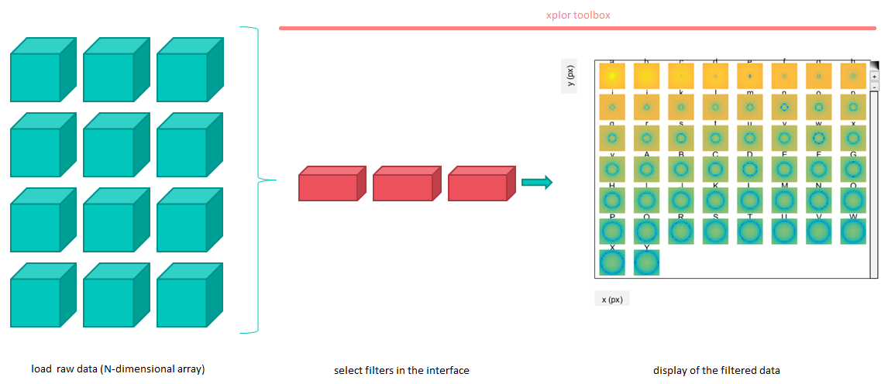
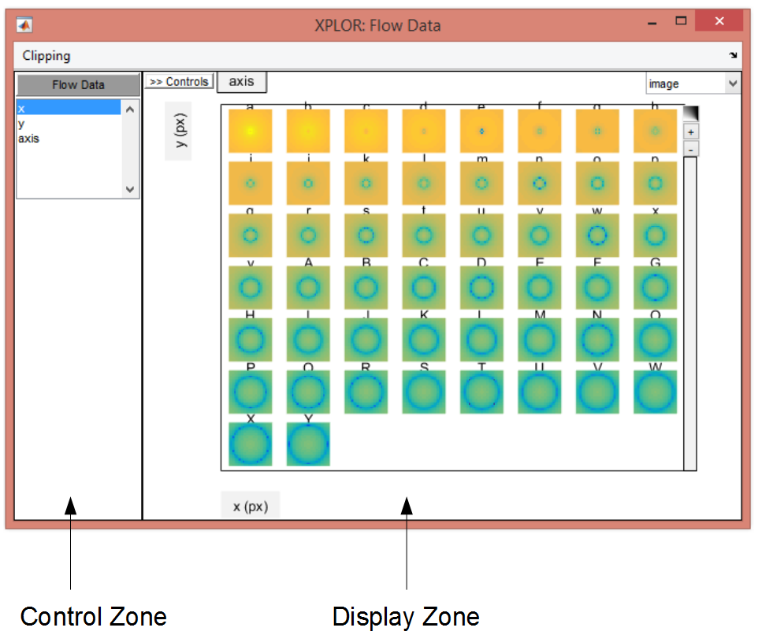
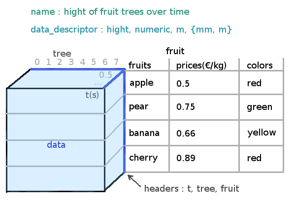
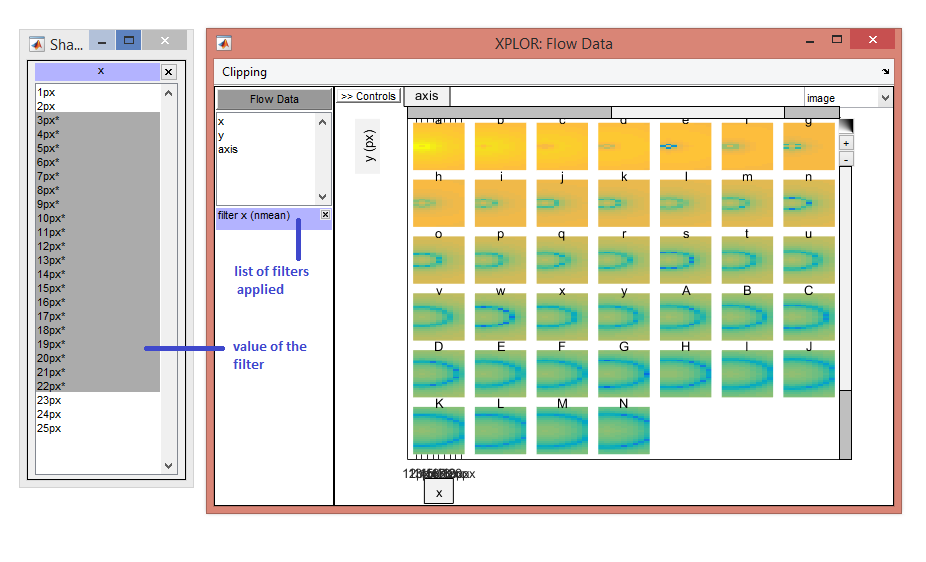

Overview¶
Xplor allows users to easily visualise their multi-dimensional data. An intuitive interface allows the selection of the filters that will be applied to the data before rendering the display.
Steps in using Xplor
- Here is a quick presentation of the main elements of Xplor:
Window : the interface ;
Xdata : the container of the data and metadata ;
Filter : to display only a slice of the data.
window object¶
Window is the main interface. It is composed of a control zone, where the user can select the filters to apply, and a display zone, in which the user can zoom and change the labels’ position.
Screenshot of the Window with the control zone and the display zone
xdata object¶
Xdata is a container for the N dimensional data and all the relative metadata.
Example of a Xdata instance
filter object¶
Filters are selected in the interface and will update the xdata element : the resulting slice of data will be displayed.
Screenshot of the Window showing the filter applied
